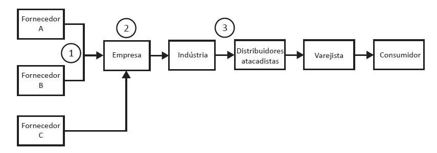

Considere a seguinte cadeia de suprimentos.

Nessa cadeia, o número 1 representa um software que visa aumento da velocidade de comunicação entre empresas, agiliza o processo de compras e que integra os fornecedores à empresa. O número 2 representa um software utilizado internamente na empresa para gestão de seu armazém; e o número 3, um software que pode ser utilizado para controle e gestão das entregas da indústria para seus distribuidores, que são grandes atacadistas.
A. MRP (material requirement planning), ERP (enterprise resource planning) e TMS (transport management system).
B. ERP (enterprise resource planning), MRP (material requirement planning) e WMS (warehouse management system).
C. EDI (electronic data interchange), WMS (warehouse management system) e TMS (transport management system).
D. TMS (transport management system), EDI (eletronic data interchange) e WMS (warehouse management system).
E. EDI (electronic data interchange), TMS (transport management system) e ERP (enterprise resource planning).
Fonte: As questões desse simulado foram obtidas na prova disponibilizada no site do INEP - Instituto Nacional de Estudos e Pesquisas Educacionais Anísio Teixeira.
Créditos: Inep - Enade
Créditos de imagem: ENADE - Tecnologia em Logística, 2018.